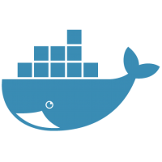

Test Writing
However you like to write tests, we've got you covered. We can train your team the BDD language Cucumber, or work with you in your favorite framework.
To assure quality, first you must define it. What does it look like when your application works? Welcome to BDD. We'll get you up to speed.
However you like to write tests, we've got you covered. We can train your team the BDD language Cucumber, or work with you in your favorite framework.

As Dave Thomas says, agile shouldn't have a capital A, because then it's a product, not a process. Whatever your process, we can teach you to integrate comprehensive testing.
QA should be flexible, not tied to a specific platform, language, or development framework. Our technologies let you test your code, however you put it out in the world.


Selenium is the standard in browser automation. Cutting-edge frameworks like Webdriver.io make it easier to use, and let developers write their tests in the same code they write your app.

Why just run tests at the desktop? Deploy your test platform to the cloud to enable Continuous Integration. End-to-end coverage with every commit.
Great QA requires consistency. Running your tests in a Docker container ensures the same environment, every time, so you can trust the test results.


Testing is universal. Whether your app is written with a cutting edge platform like Angular2/TypeScript, funky Golang, or good old Java, we can handle it. And if we don't know it, we'll learn it.